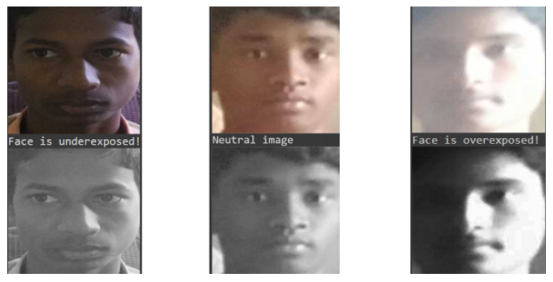
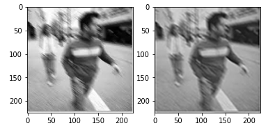

What is DATA PRE- PROCESSING ?
Data Pre-Processing includes techniques that involves transforming raw data into an understandable format. Real-world data is often incomplete, inconsistent, noisy and lacks certain behaviours or attributes, and is likely to contain many errors and imperfections. So, data pre-processing is a proven method of resolving such issues.
The Data we are having in this project is in the form of images. So, we will be dealing with image pre-processing techniques, which are sub-sets of data pre-processing.
Image pre-processing includes the steps taken to format the images before they are loaded into training models which includes, image resizing, scaling, colour corrections and many more.
Why do we need it ?
The data that we receive might not always be in the best form to feed in to the model. Hence to just manipulate the data to the form we can use effectively, we perform data pre-processing. Two things play a very important role in the face recognition pipeline. The first being the pose and second is the lighting conditions (illumination).
Problem identified in the dataset given to us: The images had different lighting conditions. When the pipeline would be deployed, we still have no control over the illumination. Hence we need to pre process our data so that all of the images would come to a common lighting condition.
The techniques we tried for achieving the same are:
* Histogram equalizer
* Adaptive Histogram equalizer (CLAHE) for grayscale images
* CLAHE - by extracting each of the channels and equalising each channel
* CLAHE - by equalising the ‘V’ channel of the HSV form of the image.
* Logarithmic transform
* Gamma Correction
* Image specific Gamma Correction
Concepts Explored
1. Histogram Equalizer
Histogram Equalization is a technique used to improve the contrast in images. The regions of lower contrast are improved to a higher contrast. The main objective of Histogram equalizer is to normalise the varying illumination conditions. Histogram Equalization can be applied to the whole image by equalizing the individual channels or by converting the image to another colour space. Adaptive Histogram Equalizer or CLAHE is used to equalize the image at every section. We can set a particular clip limit value according to which the image will be normalized. For this dataset we have used CLAHE by equalizing the ‘V’ channel of the HSV form of the image. Converting to HSV and then equalising gave the best results as compared to grayscale or RGB.
2. Gamma Correction
Gamma correction is used to improve the contrast of an image based on its current lighting conditions, which implies that for each image we can apply a different value of gamma and normalize it. We classified the images into three categories based on the illumination Overexposed : Images with very bright lighting condition Underexposed : Images with dark lighting condition Neutral : Images with a good lighting Based on this classification we used different values of gamma to correct the images. We classified the images based on the bright and dark thresholds and applied the gamma values as 2 for underexposed images and 0.3 for overexposed images. No gamma correction was done for neutral images.

3. Weiner Filter
Another major problem that we tend to face while using a dataset that includes images captured manually is Motion Blur
The most important technique for removal of blur in images due to linear motion or unfocussed optics is the Wiener filter. The Wiener filtering is a restoration technique for deconvolution that can be used effectively when the frequency characteristics of the image and additive noise are known, to at least some degree, it is possible to recover the image by generalized inverse filtering. The Wiener filtering is optimal in terms of the mean square error. In other words, it minimizes the overall mean square error in the process of inverse filtering and noise smoothing. The Wiener filtering is a linear estimation of the original image. It should be noted that Weiner filters are far and away the most common deblurring technique used because it mathematically returns the best results. It should also be re-emphasized that Wiener filtering is in fact the underlying premise for restoration of other kinds of blur; and being a least-mean-squares technique, it has roots in a spectrum of other engineering applications.
OUTPUT:-

Contributors
1. Pendyala Sri Harshita
2. Solipuram Akshith Reddy
3. Phani Tulasi Batchu
----TABLE OF CONTENT----
1. Overview
3. Data-pre-processing
4. Face-Detection
5. Face-Alignment
6. Face-Recognition
7. Face-Verification
2. Conclusion